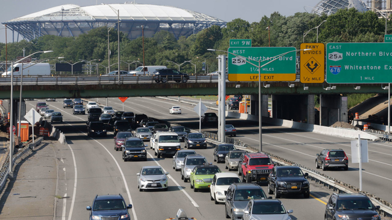

Grand Central Parkway
The Grand Central Parkway has a few unique distinctions. It is only one of two parkways in New York State to carry an elliptical black-on-white design for its trailblazer, the other being the Henry Hudson Parkway, also in New York City. Other parkways in the Bronx, Manhattan, and Staten Island use the state-standard design, while the Belt-system parkways use a modified version of the Long Island regional parkway shield with the Montauk Point Lighthouse logo. In addition, it is one of the few parkways in the state to allow truck traffic to any extent. The section shared with I-278 allows for all trucks under 14 feet (4.3 m) high.